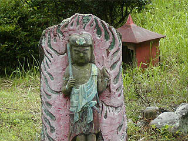
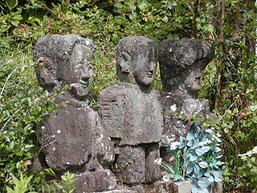

高鍋大師その1/宮崎県高鍋町
宮崎県の中部、高鍋町。海に面したのどかな町だ。
これといって特徴がある町でもない高鍋町だが、珍寺野郎には見過ごす事の出来ない超A級珍寺が居を構えている。
それが高鍋大師である。
ロケーションは小高い丘の上にあり、近くを通る国道からもその異様な石像群は良く見える。それはまるで巨大なトーテムポールが立ち並んでいるかのような光景で、かなり目立つ。しかし国道から良く見える割には実際のアプローチは結構難しい。周辺は持田古墳群と呼ばれ、のどかな田園地帯にポツポツと土饅頭のような塚がある。その古墳群の一画に物凄くわかりにくい細い道があり、そこから山に入っていき高鍋大師へと向かうのだ。
持田古墳群が目当ての考古学マニアの方が見たら間違いなく顔をしかめるであろうその寺、しかしアタシにとっちゃ「高鍋大師」と書いて「ちんでらだいどうじょう」と読んでもいい位、私の理想をかなりの高レベルで具現化してくれている、まさにこのサイトのためにあるのではないかと思える程の極上の珍寺なのだ。
細い一本道を登っていき、最初に現れるのは賽の河原。
積み石がいくつか点在するこの賽の河原には早くもオリジナリティ溢れる石像が点在している。
右から赤鬼、地蔵である。
もう、賽の河原とは思えないとぼけた味わいが全開の作品群である。
カクカクしたフォルム、薄いプロポーション、とぼけた表情、全てにおいて従来の石仏の持つ世界観を凌駕したポンチっぷり。
もう、これでもかという位の激しいオリジナリティ。赤鬼とか全然恐くないですもん。
この高鍋大師は岩岡保吉という人物がその半生をかけて製作した奇妙キテレツな石像が並ぶ超俺様テーマパークなのだ。

一画には忠烈八勇士碑も。
賽の河原を過ぎて木々が立ち並ぶ道を行くと、突然視界が開け高鍋大師の全貌が見渡せる。
おおおっ！そこには数え切れない程のカクカクして奇妙なプロポーションの石像が林立している。凄い！凄すぎる！
特に目に付くのはこの7〜8メートル級の大きな石像だ。
どうですか、この威風堂々っぷり！
この巨像が遠目にトーテムポールに見えたのだが、近くで見るとそれぞれ仏像や神像だったりする。
切り出された四角い原石をそのまま積んであるかのような胴体。その上に微妙な顔つきの頭部を乗せ、直角or直線で構成されている数本の手を両サイドに取り付ける。
するとそこには通常の石仏にはありえない不思議な造形物が出現するのだ。
最早ユニークというコトバでは片付けられない程、独自の進化を遂げた石像群。仏像彫刻の想像力の限界を越えた感がある。
そしてさらにひらがなとカタカナと漢字が入り交じった独特すぎる文字群がその不思議さに追い討ちをかけている。
石彫のお約束どころか日本語のお約束すら凌駕したナゾのコトバ。もしかして岩岡氏、文字を描くのが苦手なのか？それとも新手のポエム？
上の巨像には「十二めんやくし」と刻まれている。十二面薬師という事なのだろう。高さは8メートル。
また正面左には「岩岡山七十五戈のサク」とある。
えっ！75才でコレを作ったってゆー事？凄くないか？
しかしそんなのはまだまだ序の口だった事がこの後、判明する・・・
「十二めんやくし」の隣にそびえ立つのは「十一めんくわんのん」（十一面観音）。これも「七十五戈のサク」である。高さは7メートル。
表情が何ともいえないイイ味を出している。大橋巨泉みたいに「うっしっし・・・」という含み笑いが聞こえてきそうである。
この高鍋大師の石像の中でも一番好きな顔がこの「十一めんくわんのん」だった。
全体的なプロポーションだけでなく、細かいパーツもかなり独自の路線を突き進んでいる。直角と直線で構成された手などをみていると、ある意味、プロの仏師や彫刻家が一番やっちゃいけない事を次から次へと繰り出しているような気がする。
まさに掟破りのオンパレード。胸の部分にあるのはもしかして合掌してるのか？
「十一めんくわんのん」の胴体は4段積みになっている。その側面にはそれぞれ十一面観音のレリーフが刻まれている。
どこか遠い昔の遠い国の遺跡にある見た事も無い神像を思わせる風格を醸し出している。
数百年後にこの石像群が出土した暁には日本の20世紀はどう評価されちゃうんでしょうか・・・
もしかしたらモナリザの謎の微笑みやアルカイックスマイルと並んで「高鍋の微笑み」とかいって30世紀あたりの教科書に載りそうでコワイ。
それだけ、「ある種の」風格は供えているのだ。
これらの奇妙キテレツな石像群を作った岩岡氏は元々高鍋で精米業を営む人であった。
若かりし頃から篤い信仰心を持ち、30才の頃、四国八十八ケ所の巡礼の際に、ここ高鍋の地に八十八ケ所の写し本尊霊場を造ろうと密かに決心していたらしい。
そして昭和3年、45才の時、佐伯から石工を呼び寄せ石彫のイロハを修得しつつ、いよいよ写し本尊の製作を始めるのであった。
これが八十八体像を制作中の様子を後に示した自刻像。この高鍋大師の南を流れる小丸川の河原で製作していたそうだ。
新四国八十八カ所を完成したのが昭和8年。参拝者も大勢訪れたそうだ。そして高鍋大師の優しいお爺ちゃん住職として参拝者相手に縁側で茶飲み話に花を咲かせたそうな。メデタシメデタシ・・・
と、普通はこの辺でいいハナシとして終わるところだが、そこで終わらないのが岩岡氏の凄いところである。
実はここまでは単なるプレリュードに過ぎない。ここからが岩岡氏の怒濤の快進撃が始まるのだ。
次に岩岡氏はぎょうばと呼ばれる地下参拝洞を掘り始めた。昭和16年より5年間掘り続けた洞窟の全長は65メートル。戦時下ゆえもしかしたら避難壕のつもりで掘ったのかも知れない。ひょっとしたら避難壕を掘っていて段々テンションが上がって来た結果、参拝洞というカタチになってしまったのかも知れない。内部には自作の三十三仏が置かれたという。嗚呼、素晴らしきかな、何でも自分で作っちゃうセルフビルド人生。ぎょうばの完成後、稼業を引退し僧職に専念。この辺が岩岡氏の人生のターニングポイントである。氏は一風変わった工法で、昭和52年、89才で鬼籍に入るまでの数十年間、数々の奇妙なな石像を次々と生み出すのであった。
岩岡氏の自刻像。先刻の賽の河原に佇む姿は訪れた人を迎え入れているかのような満面の笑みをたたえている。
日本珍寺界の偉人といっていいだろう。
境内に点在する石像群。
知り合いや檀家、歴史上の人物などなど思い付く人間を片っ端から石像にしたためてしまうのではないか、という勢いで石像が並んでいる。

勲章貰った記念？
ここは真言宗の寺なので不動明王像などが多い。しかし神道系の神様もいるので、厳密に真言宗にこだわってはいないようだ。
というより宗派に関してはかなりアバウトな信仰形態を示している。
こちらは人間版見ざる言わざる聞かざる。
岩岡氏自身高鍋大師の建設に没頭するにあたっては世間からは色々な事を言われたのかも知れない。
石像ひとつひとつに岩岡氏の様々な思いが込められているのだろう。
さて。
先程の「十一めんくわんのん」の後方に控えるのは手なのか後光なのか飾りなのか良く分からない突起を持つ巨大石像。
何だか電柱みたいだなあ、と思っていたら、ホントに碍子が付いてました。これもまた歯を見せて笑っているのだろうか。腹部には「明治百年 むえん こ中 まもれ 昭和四十三年 岩岡弘覚 五月五日 八十才のさく」とある。八十才といえば比較的晩年の円熟期の作品といっていいだろう。岩岡ワールドの円熟期の作品である。高さは7.5メートル。
足元には神様らしき石像があるので神道系の神様なのだろう。天照大神か？
鳥居を潜った先には真っ赤に塗られたブロック積みの小屋がある。中も真っ赤で正面の祭壇には「けもの一サい」と白抜きで書かれている。獣一切という意味なのだろうか。このコトバが視覚的にもかなり効いている。お手製の狐があるところを見ると稲荷明神なのだろう。
鳥居エリアの端には木々に隠れるように「スサノオノミコト」が立っている。高さは7メートル。これは境内の巨大石像の中でも比較的シンプルな部類に入る。切り出し原石を五段積み重ねた上に頭部が乗っている像で刀を差している。ついでに倒壊の危険でもあったのだろうか背中に鉄の支え棒も差してある。先程の電柱みたいな像と同じく昭和43年の作。顎髭にオールバックなのだろうか。かなり濃い顔だちである。でも子供の描くライオンの絵みたいだぞ。
その後ろには大師像と巨大な五鈷杵が。
さて。
以上が賽の河原と本堂右側の庭様子である。これで高鍋大師の約半分をまわった事になる（実際にはこの寺がある山のふもとに八十八ケ所のミニ霊場があるがそこは道が途絶えていたので勘弁してね）。残り半分の本堂周辺と本堂前の庭園は長くなりそうなのでページを改める事にしましょうか。
高鍋大師その2へGO!
珍寺大道場 HOME